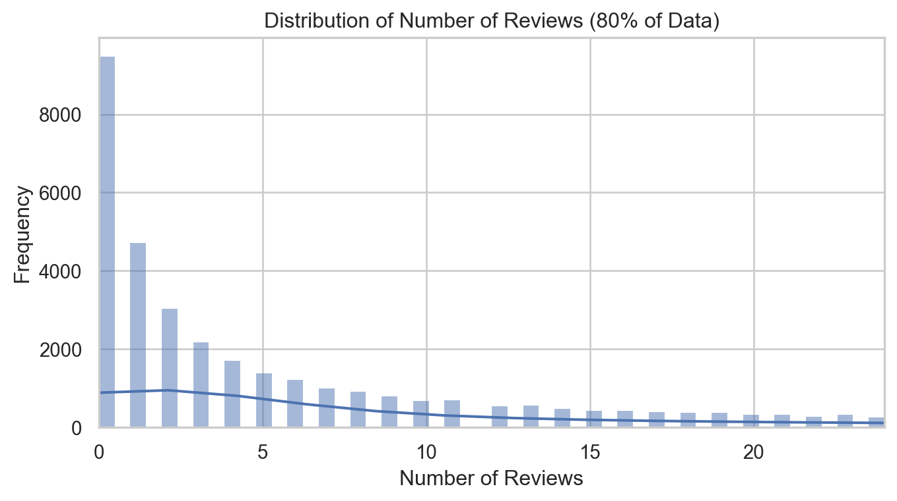

Blueprinty is a small firm that makes software for developing blueprints specifically for submitting patent applications to the US patent office. Their marketing team would like to make the claim that patent applicants using Blueprinty’s software are more successful in getting their patent applications approved. Ideal data to study such an effect might include the success rate of patent applications before using Blueprinty’s software and after using it. unfortunately, such data is not available.
However, Blueprinty has collected data on 1,500 mature (non-startup) engineering firms. The data include each firm’s number of patents awarded over the last 5 years, regional location, age since incorporation, and whether or not the firm uses Blueprinty’s software. The marketing team would like to use this data to make the claim that firms using Blueprinty’s software are more successful in getting their patent applications approved.
Data
Code
data = pd.read_csv('blueprinty.csv')data = data.drop('Unnamed: 0', axis=1)data
patents
region
age
iscustomer
0
0
Midwest
32.5
0
1
3
Southwest
37.5
0
2
4
Northwest
27.0
1
3
3
Northeast
24.5
0
4
3
Southwest
37.0
0
...
...
...
...
...
1495
2
Northeast
18.5
1
1496
3
Southwest
22.5
0
1497
4
Southwest
17.0
0
1498
3
South
29.0
0
1499
1
South
39.0
0
1500 rows × 4 columns
Compare histograms and means of number of patents by customer status:
This indicate that, on average, customers have a slightly higher number of patents than non-customers. This might suggest that customer are more engaged or invest more patentable innovations, though other factors could also influence these resutls.
Code
# Set up the figure with two subplots for better comparisonfig, axes = plt.subplots(1, 2, figsize=(8, 4))# Plot histogram for non-customerssns.histplot(data[data['iscustomer'] ==0]['patents'], ax=axes[0], color='blue', bins=30, kde=True)axes[0].set_title('Patent Distribution for Non-Customers')axes[0].set_xlabel('Number of Patents')axes[0].set_ylabel('Frequency')# Plot histogram for customerssns.histplot(data[data['iscustomer'] ==1]['patents'], ax=axes[1], color='orange', bins=30, kde=True)axes[1].set_title('Patent Distribution for Customers')axes[1].set_xlabel('Number of Patents')axes[1].set_ylabel('Frequency')# Display the plotsplt.tight_layout()plt.show()
Both groups show a similar general shape in their distribution, but customers tend to have a slightly higher frequency at higher patent counts, which corroborates the earlier finding that customers on average have more patents.
The distribution for both groups is skewed towards lower numbers of patents, with most individuals holding fewer patents.
The skewness is slightly more pronounced for customers, which could indicate that while fewer customers might have patents, those who do are likely to have more of them.
Blueprinty customers are not selected at random. It may be important to account for systematic differences in the age and regional location of customers vs non-customers.
Code
# Visualize the age distribution across regions by customer statusplt.figure(figsize=(10, 5))# Boxplot to show age distributionsns.boxplot(x='region', y='age', hue='iscustomer', data=data, palette=['blue', 'orange'])# Adjust plot labels and titleplt.title('Age Distribution by Region and Customer Status')plt.xlabel('Region')plt.ylabel('Age')plt.legend(title='Is Customer', labels=['Not Customer', 'Customer'])# Show the plotplt.show()
Code
# Group by 'iscustomer' and 'region', and get counts and mean age for each groupregion_customer_summary = data.groupby(['iscustomer', 'region']).agg( count=('region', 'count'), mean_age=('age', 'mean')).reset_index()# Pivot the table to reshape itpivot_table = region_customer_summary.pivot_table( index='region', columns='iscustomer', values=['count', 'mean_age'], aggfunc='first').reset_index()# Flatten the columns MultiIndex properly by converting all elements to string before joiningpivot_table.columns = [' '.join(map(str, col)).strip() for col in pivot_table.columns.values]# Reset index if neededpivot_table.reset_index(inplace=True)pivot_table
index
region
count 0
count 1
mean_age 0
mean_age 1
0
0
Midwest
207
17
27.596618
22.852941
1
1
Northeast
488
113
26.519467
24.579646
2
2
Northwest
171
16
26.532164
20.812500
3
3
South
171
20
27.464912
24.950000
4
4
Southwest
266
31
25.907895
24.500000
Count and Customer Status:
Non customer are more numerous across all regions compared to customers
Northleast has the highest count of non-customers, while Midwest has the lowest count of customers
Mean Age
Non-customers tend to have a higher mean age in all regions compared to customers
The Northwest region has the youndest average for customer
This information suggests that there might be regional preferences or differences in how products and services are adopted between customer groups. Younger individual tend to be customers more in Northwest, indicating possible more innovate or youth-targeted offerings in that region.
Estimation of Simple Poisson Model
Since our outcome variable of interest can only be small integer values per a set unit of time, we can use a Poisson density to model the number of patents awarded to each engineering firm over the last 5 years. We start by estimating a simple Poisson model via Maximum Likelihood.
The Likelihood Function is: \[
L(\lambda) = \prod_{i=1}^n \frac{e^{\lambda}\lambda^{Y_i}}{Y_i!}
\]
This can also be expressed as: \[
L(\lambda) = e^{-n\lambda} \lambda^{\sum_{i=1}^n Y_i} \prod_{i=1}^n \frac{1}{Y_i!}.
\]
The log-likelihood function is: \[
\log L(\lambda) = -n\lambda + \log(\lambda) \sum_{i=1}^{n} Y_i - \sum_{i=1}^{n} \log(Y_i!)
\]
Define likelihood and log-likekihood function for the Poisson model
Code
def poisson_likelihood(lam, Y): n =len(Y) sum_Y = np.sum(Y) likelihood = np.exp(-n * lam) * (lam ** sum_Y) / np.prod([np.math.factorial(y) for y in Y])return likelihooddef poisson_log_likelihood(lam, Y): n =len(Y) sum_Y = np.sum(Y) log_likelihood =-n * lam + np.log(lam) * sum_Y - np.sum([np.log(np.math.factorial(y)) for y in Y])return log_likelihood
Use function to plot lambda
Code
import warnings warnings.filterwarnings("ignore") Y = data['patents']# Define the range for lambda valueslambda_range = np.linspace(0.01, 10, 1000) # Start from 0.01 to avoid log(0)# Calculate the log-likelihood for each lambda in the rangelog_likelihood_values = [poisson_log_likelihood(lam, Y) for lam in lambda_range]# Plot the resultsplt.figure(figsize=(8, 3))plt.plot(lambda_range, log_likelihood_values, label='Log-Likelihood')plt.xlabel('Lambda (λ)')plt.ylabel('Log-Likelihood')plt.title('Log-Likelihood of Observed Patent Counts Across Lambda Values')plt.legend()plt.grid(True)plt.show()
To find the maximum likelihood estimator (MLE) for \(\lambda\) , denoted as \(\lambda_{MLE}\), we take the derivative of the log-likelihood with respect to \(\lambda\) and set it equal to zero. The derivative is:
So the MLE of \(\lambda\) is the sample mean \(\bar{Y}\), which is intuitive since for a Poisson distribution, the mean and variance are both equal to \(\lambda\).
Maximum Likelihood Estimator is {3.6846666666666668}
Find the MLE by optimizing your likelihood function with scipy.optimize in Python.
Code
from scipy.optimize import minimize# We define the negative log-likelihood function for the Poisson distributiondef negative_poisson_log_likelihood(lam, Y):if lam <=0: # Avoid log(0) for lam=0return np.inf n =len(Y) sum_Y = np.sum(Y)# The negative sign is important because we want to maximize the log-likelihood,# which is equivalent to minimizing its negative. neg_log_likelihood = n * lam - np.log(lam) * sum_Y + np.sum([np.log(np.math.factorial(y)) for y in Y])return neg_log_likelihood# Initial guess for lambda can be the sample meaninitial_guess = [Y.mean()]# Minimize the negative log-likelihood functionresult = minimize( fun=negative_poisson_log_likelihood, x0=initial_guess, args=(Y,), method='L-BFGS-B', # This optimization method allows for bounding the solution bounds=[(1e-5, None)] # Lambda must be greater than 0)# Extract the MLE for lambda from the resultlambda_mle = result.x[0] if result.success elseNoneprint('Maximum Likelihood Estimator is',{lambda_mle})
Maximum Likelihood Estimator is {3.6846666666666668}
Estimation of Poisson Regression Model
Next, we extend our simple Poisson model to a Poisson Regression Model such that \(Y_i = \text{Poisson}(\lambda_i)\) where \(\lambda_i = \exp(X_i'\beta)\). The interpretation is that the success rate of patent awards is not constant across all firms (\(\lambda\)) but rather is a function of firm characteristics \(X_i\). Specifically, we will use the covariates age, age squared, region, and whether the firm is a customer of Blueprinty.
# Define Log-Likelihood functiondef possion_regression_function(beta, Y, X):# Calculate lambda for each observation linear_predictor = X.dot(beta) lambda_i = np.exp(linear_predictor)# Calculate the log-likelihood log_likelihood = np.sum(-lambda_i + Y * np.log(lambda_i) - np.array([np.log(np.math.factorial(y)) for y in Y]))return log_likelihood
Use the fuction to find the MLE vector and the Hessian to find standard errors of the beta parameter estimates and present a table of coefficients and standard errors.
Code
from scipy.stats import poissonfrom numpy.linalg import invfrom sklearn.preprocessing import StandardScaler# Prepare the covariate matrix Xdata['age_squared'] = data['age'] **2# Initialize the scalerscaler = StandardScaler()# Select the numeric predictorsnumeric_features = ['age', 'age_squared']# Fit and transform the featuresdata[numeric_features] = scaler.fit_transform(data[numeric_features])regions = pd.get_dummies(data['region'], drop_first=True)X = pd.concat([pd.Series(1, index=data.index, name='Intercept'), data[['age', 'age_squared', 'iscustomer']], regions], axis=1)def convert_boolean_columns_to_int(df):for column in df.columns:if df[column].dtype ==bool:# Convert Boolean column to int df[column] = df[column].astype(int)return dfX = convert_boolean_columns_to_int(X)X_column_names = X.columnsY = data['patents']X_glm = X.copy()Y_glm = Y.copy()X = X.valuesY = Y.valuesdef possion_neg_regression_function(beta, Y, X):# Calculate lambda for each observation linear_predictor = np.dot(X, beta) lambda_i = np.exp(linear_predictor) lambda_i = np.clip(lambda_i, 1e-10, np.inf) neg_log_likelihood =-np.sum(Y * np.log(lambda_i) - lambda_i)return neg_log_likelihood# initial_beta = np.zeros(X.shape[1])# initial_beta = np.random.normal(loc=0, scale=1, size=X.shape[1])initial_beta = np.zeros(X.shape[1])initial_beta[0] = np.log(np.mean(Y))# Minimize the negative log-likelihood functionresult = minimize( fun=possion_neg_regression_function, x0=initial_beta, args=(Y, X), method='L-BFGS-B',)
Code
def hessian_neg_log_likelihood(beta, Y, X): lambda_i = np.exp(np.dot(X, beta)) diag_lambda = np.diag(lambda_i) hessian = np.dot(X.T, np.dot(diag_lambda, X))return hessianhessian_matrix = hessian_neg_log_likelihood(result.x, Y, X)covariance_matrix = inv(hessian_matrix)standard_errors = np.sqrt(np.diag(covariance_matrix))# Display the coefficients and their standard errorscoefficients_table = pd.DataFrame({'Coefficient': np.round(result.x, 4),'Standard Error': np.round(standard_errors, 3)}, index=X_column_names)print(coefficients_table)
Coefficient Standard Error
Intercept 1.2154 0.036
age 1.0464 0.100
age_squared -1.1408 0.102
iscustomer 0.1181 0.039
Northeast 0.0986 0.042
Northwest -0.0201 0.054
South 0.0572 0.053
Southwest 0.0514 0.047
Check results using sm.GLM() function.
Code
import statsmodels.api as smmodel = sm.GLM(Y_glm, X_glm, family=sm.families.Poisson())results = model.fit()# Get the summary of the resultsglm_summary = results.summary()# Extract only the regression results tableglm_results_table = glm_summary.tables[1]# To display or print out the tableprint(glm_results_table)
Intercept: This value represents the baseline log-odds of patent success when all other predictor variables are held at zero.
age: For every one-year increase in age, the log-odds of patent success increase by 0.1445. This suggests a positive relationship between the age of the patent application (or applicant) and the likelihood of success.With p < 0.001, this variable indicates a strong positive relationship with the outcome as age increases, up to a point (due to the quadratic term).
age squared:The negative coefficient for age squared indicates a diminishing return effect; as age increases, its positive impact on patent success starts to decrease. This typically suggests a peak point beyond which additional years in age reduce the likelihood of success. Also with p < 0.001, it confirms the non-linear relationship where increasing age has diminishing returns on the log odds of the outcome.
iscustomer: Being a customer is associated with an increase in the log-odds of patent success by 0.1181 compared to non-customers. This effect is statistically significant and suggests that customers of Blueprinty might have a higher likelihood of patent success. This variable is statistically significant (p = 0.002), showing that being a customer positively influences the outcome.
Regional Effects:
Northeast: Indicates a positive effect on patent success in the Northeast compared to the baseline region (the one dropped during dummy coding).
Northwest: Suggests a slight negative effect on patent success compared to the baseline, but this may not be statistically significant.
South and Southwest: Both regions show a positive effect on patent success, though the effects are small and the confidence around these estimates might overlap with zero, suggesting limited statistical significance.
Conclusions:
Age: There’s a clear positive relationship between age and patent success, which peaks and then starts to decline as indicated by the quadratic term (age squared). This could reflect that mid-career individuals or entities are most successful in patent applications, possibly due to optimal combinations of experience and active engagement in their fields.
Customer Status: Being a customer of Blueprinty has a positive impact on patent success. This suggests that the services or products provided by Blueprinty are effective in enhancing the success rate of patents for their customers.
Regional Variations: There are some regional differences in patent success rates, with the Northeast and Southern regions showing a positive impact relative to the baseline region.
AirBnB Case Study
Introduction
AirBnB is a popular platform for booking short-term rentals. In March 2017, students Annika Awad, Evan Lebo, and Anna Linden scraped of 40,000 Airbnb listings from New York City. The data include the following variables:
Variable Definitions
- `id` = unique ID number for each unit
- `last_scraped` = date when information scraped
- `host_since` = date when host first listed the unit on Airbnb
- `days` = `last_scraped` - `host_since` = number of days the unit has been listed
- `room_type` = Entire home/apt., Private room, or Shared room
- `bathrooms` = number of bathrooms
- `bedrooms` = number of bedrooms
- `price` = price per night (dollars)
- `number_of_reviews` = number of reviews for the unit on Airbnb
- `review_scores_cleanliness` = a cleanliness score from reviews (1-10)
- `review_scores_location` = a "quality of location" score from reviews (1-10)
- `review_scores_value` = a "quality of value" score from reviews (1-10)
- `instant_bookable` = "t" if instantly bookable, "f" if not
review_scores_cleanliness, review_scores_location,review_scores_value: Over 10,000 missing values each. This represents about 25% of the data, which is significant.
host_since: 35 missing values.
Let’s start by handling the missing values based on the strategy described. We will impute the missing values for bathrooms and bedrooms with the median and decide on the review scores next
Impute missing values for ‘bathrooms’ and ‘bedrooms’ with their respective medians
Review Scores: Given the high proportion of missing data (around 25%), filling them with the median or mean could introduce bias, especially if the missingness is not random. An alternative approach is to create a binary indicator variable for each of these scores, which will indicate whether the score was originally missing. This way, we retain all listings in our analysis and potentially capture some information about why scores might be missing (e.g., newer listings might not have scores yet).
Impute missing review scores with the median
Code
# Create binary indicators for missing review scoresairbnb['cleanliness_missing'] = airbnb['review_scores_cleanliness'].isnull().astype(int)airbnb['location_missing'] = airbnb['review_scores_location'].isnull().astype(int)airbnb['value_missing'] = airbnb['review_scores_value'].isnull().astype(int)# Impute missing review scores with the medianairbnb['review_scores_cleanliness'].fillna(airbnb['review_scores_cleanliness'].median(), inplace=True)airbnb['review_scores_location'].fillna(airbnb['review_scores_location'].median(), inplace=True)airbnb['review_scores_value'].fillna(airbnb['review_scores_value'].median(), inplace=True)# Check if all missing values are addressedfinal_missing_values_check = airbnb.isnull().sum()final_missing_values_check
All the missing values in the review scores have been addressed, and we now have binary indicators for whether the original scores were missing. The host_since column still has 35 missing values, but since it is not directly used in our model, we won’t focus on imputing it right now.
Code
# Setting up the visualization stylesns.set(style="whitegrid")# Plotting the distribution of number of reviewsplt.figure(figsize=(8, 4))sns.histplot(airbnb['number_of_reviews'], bins=50, kde=True)plt.title('Distribution of Number of Reviews')plt.xlabel('Number of Reviews')plt.ylabel('Frequency')plt.show()
Let’s take a closer eye on 80% population of data
Code
# Calculate the 80th percentilepercentile_80 = airbnb['number_of_reviews'].quantile(0.8)# Plotting the distribution of number of reviews limited to the 80th percentileplt.figure(figsize=(8, 4))sns.histplot(airbnb['number_of_reviews'], bins=50, kde=True, binrange=(0, percentile_80))plt.title('Distribution of Number of Reviews (80% of Data)')plt.xlabel('Number of Reviews')plt.ylabel('Frequency')plt.xlim(0, percentile_80)plt.show()

The distribution of the number of reviews is highly skewed to the right, with most listings having a relatively low number of reviews and a few listings having a very high number
Code
# Visualization of number of reviews by room typeplt.figure(figsize=(8, 4))sns.boxplot(x='room_type', y='number_of_reviews', data=airbnb)plt.title('Number of Reviews by Room Type')plt.xlabel('Room Type')plt.ylabel('Number of Reviews')plt.show()# Scatter plot for number of reviews vs. priceplt.figure(figsize=(8, 4))sns.scatterplot(x='price', y='number_of_reviews', data=airbnb)plt.title('Number of Reviews vs. Price')plt.xlabel('Price')plt.ylabel('Number of Reviews')plt.xscale('log') # Using logarithmic scale due to wide range of pricesplt.show()# Scatter plots for number of reviews vs. review scoresfig, axes = plt.subplots(1, 3, figsize=(8, 4))score_vars = ['review_scores_cleanliness', 'review_scores_location', 'review_scores_value']titles = ['Cleanliness', 'Location', 'Value']for ax, var, title inzip(axes, score_vars, titles): sns.scatterplot(ax=ax, x=airbnb[var], y=airbnb['number_of_reviews']) ax.set_title(f'Number of Reviews vs. {title}') ax.set_xlabel(title) ax.set_ylabel('Number of Reviews')plt.tight_layout()plt.show()
Plot interpretation:
Room Type:
The number of reviews varies by room type, with entire homes/apartments generally receiving more reviews than private or shared rooms. This might reflect a preference or higher turnover in these types of listings.
Price:
The relationship between price and number of reviews is not linear, suggesting that very high or very low priced listings might have fewer reviews. The logarithmic scale on price helps in visualizing this across a wide range of values.
Review Scores:
There isn’t a clear trend in the scatter plots between review scores and the number of reviews, indicating that while scores may affect guest satisfaction, they do not necessarily correlate directly with the frequency of bookings (as measured by reviews). There might be a slight increase in reviews with higher scores for cleanliness and value.
Build Poisson Regression Model
Code
from patsy import dmatrices# Convert variables to the same time intervalairbnb['last_scraped'] = pd.to_datetime(airbnb['last_scraped'])airbnb['host_since'] = pd.to_datetime(airbnb['host_since'])# Calculate the duration in years that each listing has been activeairbnb['duration_years'] = (airbnb['last_scraped'] - airbnb['host_since']).dt.days /365.25# Compute reviews per yearairbnb['reviews_per_year'] = airbnb['number_of_reviews'] / airbnb['duration_years']# Handle cases where duration_years is zero to avoid division by zeroairbnb['reviews_per_year'].fillna(0, inplace=True)# Encoding categorical variables using patsy (for statsmodels compatibility)formula ="""reviews_per_year ~ room_type + bathrooms + bedrooms + price + review_scores_cleanliness + review_scores_location + review_scores_value + cleanliness_missing + location_missing + value_missing"""# Prepare the design matrices for regressiony, X = dmatrices(formula, airbnb, return_type='dataframe')# Fit a Poisson regression model using the same training datapoisson_model = sm.GLM(y, X, family=sm.families.Poisson())poisson_results = poisson_model.fit()poisson_summary = poisson_results.summary()# Extract only the regression results tablepoisson_results_table = poisson_summary.tables[1]# To display or print out the tableprint(poisson_results_table)
Intercep: This is log of expected count of reviews when all other variables are zero. Since this scenario isn’t realistic, it primarily serves as baseline for the model
room_type
Private room: listings that are private rooms have slightly more reviews compared to entire homes/apartments, holding other factors constant. The effect is relatively small
Share room: Shared rooms are expected to have more reviews than the baseline category. Shared rooms show a stronger positive association with the number of reviews compared to private rooms.
bathrooms: More bathrooms are associated with more reviews, indicating that listings with more bathrooms might be more frequently booked or reviewed.
bedrooms: More bedrooms are associated with an increase in the expected count of reviews, suggesting that larger properties might attract more bookings and thus more reviews
price: A higher price is slightly negatively associated with the number of reviews. This small coeficient suggests that price inceases might slightly reduce the likelihood of getting reviewed.
Review scores:
cleanliness: higher clealiness scrores are positively associated with more reviews, indicating that cleanser listings are more likely to receive reviews.
location: Surprisingly, better location scores are associated with fewer reviews. This might reflex a complex interaction with other factors not captured in the model or the properties in desiable locations might not meet all guest expectations or that guests in such locations review less frequently.
value: Better value scores are also negatively associated with the number of reviews, which might suggest that guest have higher expectations that aren’t met as often they rate the value highly.
Missing Indicators:
cleanliness missing: Listing missing cleanliness scores have significantly fewer reviews, possibly indicating newer or less popular listings.
location missing: Similarly, listings missing location scores have fewer reviews
value missing: Listing missing value scores also have fewer reviews.